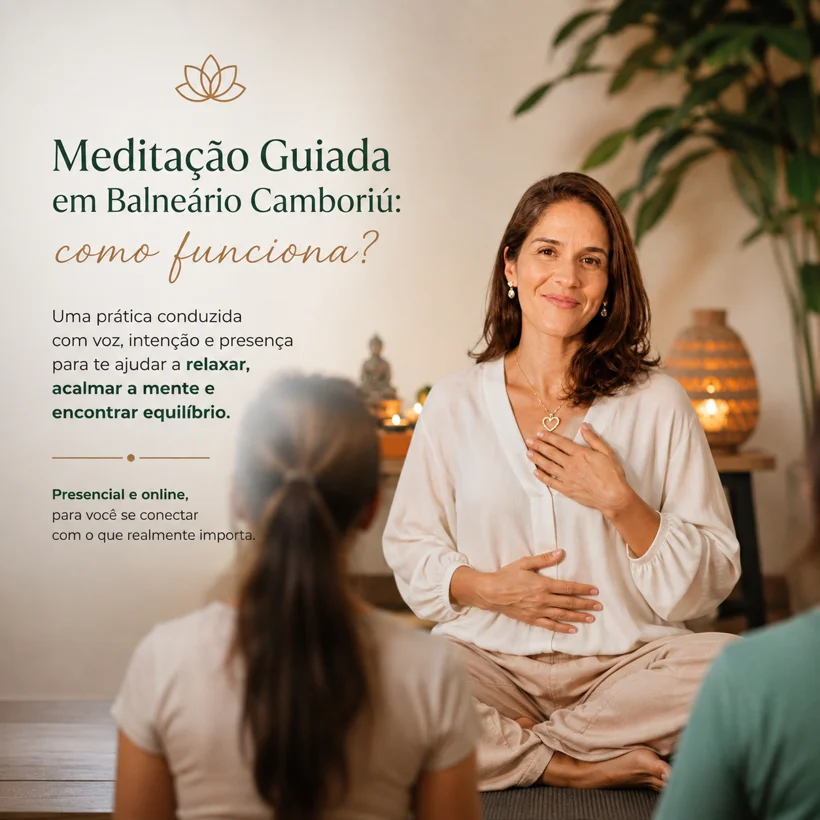

Sessão individual de terapia multidimensional
Um encontro reservado para conversar sobre questões emocionais e explorar o autoconhecimento por meio da abordagem multidimensional de Vanessa.
Consultar atendimento individualServiços
Escolha entre um encontro individual, uma prática em grupo ou um ciclo em áudio para acompanhar no seu ritmo.
Um encontro reservado para conversar sobre questões emocionais e explorar o autoconhecimento por meio da abordagem multidimensional de Vanessa.
Consultar atendimento individual
A prática acontece em grupo, com orientações de Vanessa para acompanhar a respiração e voltar a atenção ao presente. Consulte as próximas datas e as opções presenciais e online.
Consultar os próximos encontrosSão 21 áudios com duração média de dez minutos. Você escolhe em que momento do dia ouvir cada prática. Valor anunciado no perfil: R$ 80,00.
Acessar o ciclo na Hotmart